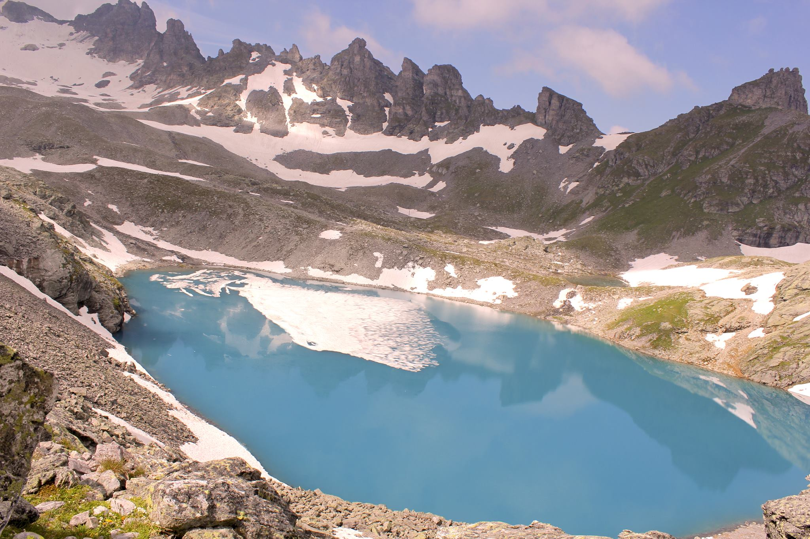
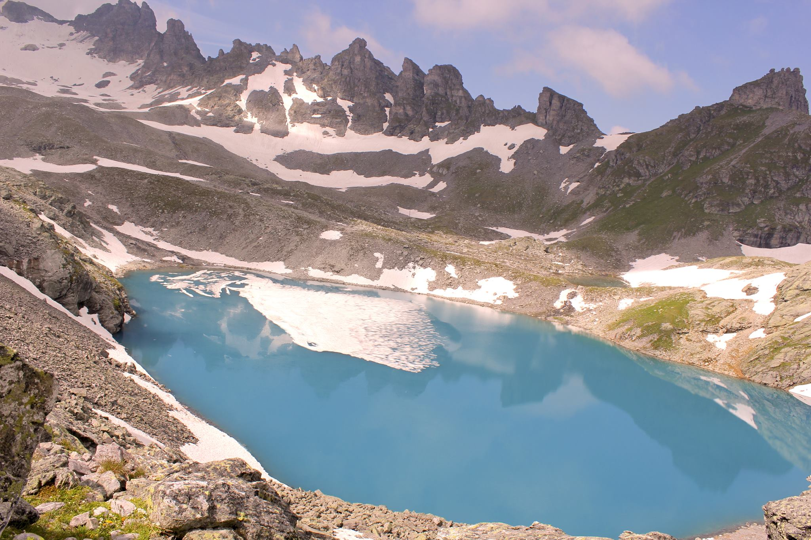

Department of Thermal and Fluid Engineering,
University of Twente,
The Netherlands
E-mail: k.jain@utwente.nl
 

Kartik Jain, Assistant Professor of Biofluid Dynamics,
Department of Thermal and Fluid Engineering,
University of Twente,
The Netherlands
E-mail: k.jain@utwente.nl


Mengyu Wang
(2023--ongoing)
Computational modeling of flow reversal to understand the
etiology of type II endoleaks

Tristan Vlogman
(2021--ongoing)
A computational model to study and improve the efficacy of
particles transport in radioembolization therapy for liver tumours

Lisa Rutten
(2020--ongoing with Michel Reijnen)
Optical Coherence Tomography and High-Fidelity Flow
Simulations for improved Stent Planning in Femoropopliteal
Disease
Timo Nijkamp
(2023--2024, with Isala hospital, Zwolle)
Computational Analysis of Non-Obstructive Coronary Lesions in
Myocardial Infarction Patients Using Lattice Boltzmann Method
Ruben Roozendaal
(2021-- 2022)
Fluid mechanics of CSF flow in extracellular spaces
Frank Schermer
(2020--2022)
Fluid mechanics of CSF flow in perivascular spaces

Jan van der Hoek
(2020--2021)
Computational modeling of flow in the liver vasculature
Bas Wessels
(2020, with Rob Hagmeijer and Rutger Hebbink)
A Numerical study of the Wash-out effects during Nasal High Flow Therapy using Lattice Boltzmann method
Joris Kaal
(2020--2021 with Tissuse GmbH)
PIV experiments and CFD on organ-on-a-chip devices

Dongwei Ye
(2018, with Prof. Georg May, RWTH Aachen University, Germany)
A mathematical model of solute transport and oxygen consumption in nephrons
Claudia Bortolussi
(2018, with Prof. Umberto Morbiducci, Polytechnic of Turin, Italy)
Computational
modeling of flow in the kidney
Julia Goris
(2021--ongoing, University of Twente)
Computational
studies of the influence of catheter in flow field during
radioembolization to treat liver cancers
Jana Gericke
(2016, University of Siegen, Germany)
Direct numerical
simulation of transition to turbulence in pipe flows with varying
degree of stenosis using the Lattice Boltzmann Method
Berk Nergiz
(2018, with Prof. Robert Nelson, ETH Zürich)
1D
computations of flow and oxygen transport in micro-vascular
networks